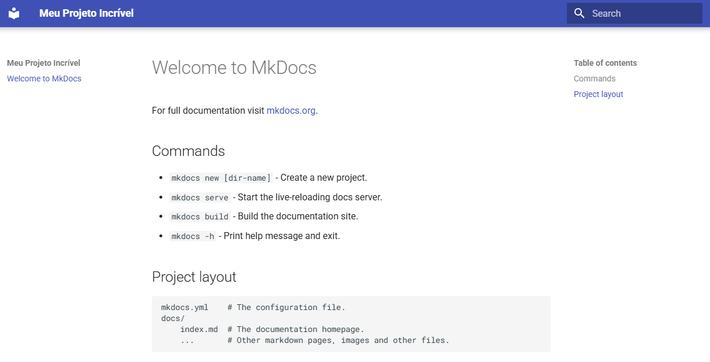
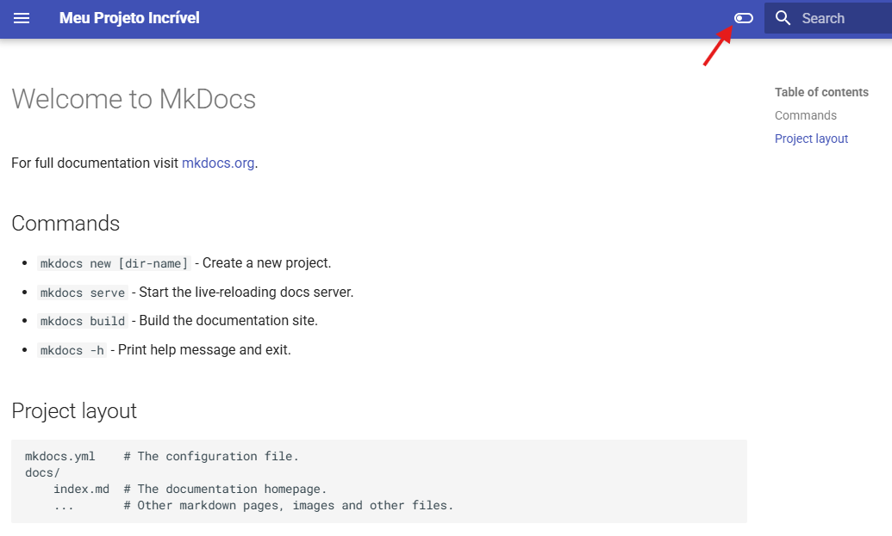

MkDocs - Instalando e configurando o Material for MkDocs¶

O MkDocs é uma ferramenta estática de construção de sites de documentação. Ele transforma arquivos de Markdown em um site totalmente navegável e com um visual profissional. E para isso, ele precisa de um tema. É aí que entra o Material for MkDocs.
O que é o Material for MkDocs?¶
O Material for MkDocs é um tema popular, moderno e altamente personalizável para o MkDocs. Ele não é o tema padrão, mas é tão rico em funcionalidades que muitas pessoas o consideram o padrão de fato para criar documentação de alta qualidade. O nome "Material" vem da filosofia de design Material Design, desenvolvida pelo Google, conhecida por sua interface limpa, intuitiva e agradável.
Imagine que o MkDocs é a estrutura da sua casa (a fundação, as paredes) e o Material for MkDocs é o design de interiores (o estilo dos móveis, as cores das paredes, a iluminação). Ele pega sua documentação básica e a transforma em algo muito mais atraente e funcional.
-
Navegação e Estrutura Otimizadas:
-
Navegação lateral inteligente: A barra de navegação à esquerda é "fixa" e se expande e se contrai, facilitando a navegação em projetos grandes.
-
Abas de seção: Você pode agrupar páginas relacionadas em abas na navegação principal, mantendo a barra de navegação limpa. É ótimo para dividir a documentação em áreas como "Início Rápido", "Guias" e "Referências de API".
-
Navegação de página: Na lateral direita, ele exibe um sumário (índice) da página atual, permitindo que o leitor pule rapidamente para diferentes seções do conteúdo.
-
-
Pesquisa Poderosa:
-
Pesquisa instantânea: Possui uma função de pesquisa em tempo real que mostra os resultados enquanto você digita, sem a necessidade de recarregar a página. Ele também indexa o conteúdo do seu site, tornando a busca extremamente rápida e eficiente.
-
Realce de resultados: Ao clicar em um resultado, ele te leva para a seção exata e destaca os termos da busca na página.
-
-
Personalização e Estilização:
-
Modo claro/escuro: Inclui um botão para alternar entre o modo de visualização claro e escuro, o que é um recurso muito apreciado pelos usuários.
-
Opções de cor: Você pode mudar a cor principal, a cor de destaque e até mesmo a cor da fonte, tudo diretamente no arquivo de configuração mkdocs.yml.
-
Ícones: Suporte para uma vasta biblioteca de ícones, como FontAwesome, para adicionar visualmente a títulos, botões e listas.
-
-
Extensões e Conteúdo Dinâmico:
-
Anotações e Caixas de Conteúdo: Permite adicionar caixas de aviso (info, sucesso, aviso, erro) com ícones, o que ajuda a destacar informações importantes. Por exemplo, você pode usar !!! tip "Dica" para criar uma caixa de dicas.
-
Blocos de código aprimorados: Suporta destaque de sintaxe para quase todas as linguagens de programação, com numeração de linhas e a possibilidade de criar abas para exibir código em diferentes linguagens (por exemplo, "Python", "JavaScript").
-
Diagramas e gráficos: Permite a integração de diagramas usando ferramentas como Mermaid, o que é essencial para documentar fluxos de trabalho ou arquiteturas.
-
-
Multilíngue e Suporte à Comunidade:
-
Internacionalização (i18n): Tem suporte integrado para criar documentação em múltiplos idiomas.
-
Versões da documentação: Você pode gerenciar e exibir diferentes versões da sua documentação (por exemplo, v1.0, v2.0).
-
Vantagens de Uso¶
-
Estética Profissional: Eleva o visual da sua documentação, tornando-a muito mais agradável e confiável para os usuários. Uma boa aparência passa a impressão de um projeto bem cuidado.
-
Experiência do Usuário (UX) Aprimorada: A navegação, pesquisa e a estrutura geral do site são muito mais intuitivas. Os usuários gastam menos tempo procurando informações e mais tempo aprendendo.
-
Produtividade: Com as extensões e funcionalidades extras, você pode criar documentação mais rica e interativa de forma mais rápida. As caixas de destaque, por exemplo, eliminam a necessidade de estilização manual em HTML.
-
Comunidade Ativa e Atualizações Constantes: O Material for MkDocs tem uma grande comunidade de usuários e é mantido ativamente pelo seu criador, Martin Donath. Isso significa que ele é constantemente atualizado com novos recursos e correções de bugs.
Instalação¶
A instalação é bem simples, tornando a adoção rápida.
 Instale o MkDocs e o tema Material:
Instale o MkDocs e o tema Material:
 Crie um novo projeto
Crie um novo projeto
 Configure o tema no mkdocs.yml:
Configure o tema no mkdocs.yml:
Abra o arquivo mkdocs.yml e adicione a seguinte linha:
 Inicie o servidor de desenvolvimento
Inicie o servidor de desenvolvimento
Para iniciar o servidor de desenvolvimento e verificar a aparência atual do site, utilize o comando abaixo:
Agora, abra seu navegador no endereço http://127.0.0.1:8000 e visualize sua documentação já com o tema Material for MkDocs aplicado.
A página exibida deve ser semelhante à imagem abaixo, apresentando o menu lateral à esquerda, o conteúdo principal ao centro e a barra superior com a busca e o título do projeto:

Modo escuro e claro¶
Abra o arquivo mkdocs.yml na raiz do seu projeto e ajuste-o para que contenha as seguintes linhas básicas de configuração:
Recarregue a página no navegador e observe que, ao lado da caixa de pesquisa no menu superior, foi adicionado um controle deslizante que permite alternar entre os modos claro e escuro do tema.
Esse recurso faz parte das funcionalidades do Material for MkDocs e permite que os usuários escolham a visualização mais confortável para leitura.

🎯 Entendendo a Configuração palette¶
A configuração palette é um recurso do Material for MkDocs que define uma lista de esquemas de cores disponíveis para o seu site. Essa lista é usada para gerar um seletor na interface do usuário (UI), geralmente no cabeçalho, que permite aos visitantes alternar entre diferentes paletas.
Essa configuração anterior define duas paletas uma chamada default (modo claro) e outra chamada slate (modo escuro).
O scheme define o nome do esquema de cores. O Material for MkDocs já vem com alguns esquemas pré-definidos que você pode usar, como:
default: O esquema padrão, que geralmente tem um fundo claro e texto escuro.slate: Um esquema escuro, com fundo cinza-azulado e texto claro.
Você também pode criar seus próprios esquemas de cores se precisar de algo mais específico.
MkDocs é uma excelente ferramenta para criar documentação de forma rápida e eficiente. Uma das grandes vantagens é a possibilidade de customizar a aparência do seu site, e o tema Material for MkDocs oferece muitas opções para isso. A configuração palette é um dos recursos mais populares para personalizar o esquema de cores do seu site, permitindo que os usuários alternem entre o modo claro e o modo escuro, por exemplo.
🌕 Paleta 1: Modo Claro (Light Mode)¶
scheme: default: Define a paleta padrão, que é o modo claro.toggle: Esta chave configura como o botão de alternância para essa paleta será exibido.icon: material/toggle-switch-off-outline: Define o ícone para o botão. Neste caso, é um ícone de interruptor desligado. Material for MkDocs usa a biblioteca de ícones Material Design, e você pode encontrar a lista completa de ícones aqui.name: Switch to dark mode: Este é o texto que aparece quando o usuário passa o mouse sobre o botão de alternância. Ele informa ao usuário o que acontecerá se ele clicar no botão, ou seja, "Mudar para o modo escuro".
🌑 Paleta 2: Modo Escuro (Dark Mode)¶
scheme: slate: Define a paleta para o modo escuro.toggle: Configura o botão de alternância para esta paleta.icon: material/toggle-switch: Define o ícone de um interruptor ligado.name: Switch to light mode: O texto que aparece ao passar o mouse sobre o botão, informando ao usuário que ele irá "Mudar para o modo claro".
Quando o usuário acessa o seu site, o Material for MkDocs verifica a configuração palette. Se mais de um esquema estiver definido, ele adiciona um botão de alternância no canto superior direito da página.
- Quando o site está no modo claro (
scheme: default), o botão exibe o ícone de interruptor desligado e a dica de ferramenta "Switch to dark mode". - Quando o usuário clica no botão, o tema muda para o modo escuro (
scheme: slate), e o botão é atualizado para exibir o ícone de interruptor ligado e a dica de ferramenta "Switch to light mode".
Essa alternância é feita de forma fluida, sem a necessidade de recarregar a página.
🤖 Observações Adicionais¶
-
Ordem Importa: A ordem das paletas na lista define a ordem em que elas aparecerão no menu de alternância. O Material for MkDocs também usará a primeira paleta da lista como a padrão para o seu site. No exemplo fornecido, o site será carregado inicialmente no modo claro.
-
Ícones e Nomes Claros: Use ícones e nomes de alternância que sejam intuitivos para o usuário. A combinação de ícones e nomes como "Mudar para modo claro" e "Mudar para modo escuro" é uma prática recomendada, pois deixa claro qual é a ação do botão.
Entendendo a Configuração features¶
A configuração features é um recurso do Material for MkDocs que permite habilitar funcionalidades específicas do tema. Essas funcionalidades são ativadas adicionando seus nomes à lista features no seu arquivo de configuração mkdocs.yml.
Vamos analisar a configuração em detalhes:
Essa configuração habilita duas funcionalidades: a sugestão na busca (search.suggest) e as abas de conteúdo (content.tabs).
🔎 search.suggest¶
O recurso search.suggest melhora a experiência de busca no seu site. Quando um usuário começa a digitar algo no campo de busca, o MkDocs não apenas filtra os resultados, mas também exibe sugestões de preenchimento automático.
- O que ele faz?: Ele exibe sugestões de termos de busca com base no conteúdo do seu site. Por exemplo, se o usuário digitar "inst", o sistema pode sugerir "instalação", "instalar" ou "instruções".
- Por que usá-lo?:
- Melhora a experiência do usuário: Ajuda o usuário a encontrar o que procura mais rapidamente, mesmo que ele não saiba o termo exato.
- Reduz erros de digitação: As sugestões automáticas ajudam a corrigir pequenos erros de digitação.
- Acelera a busca: Permite que o usuário conclua a busca com menos digitação.